夏休み星空日記
7月21日(日)
7月27日(土)
7月28日(日)早朝
時刻 19:30 - 20:30
この時期に見える1等星を探してみましょう。
天頂付近：アルクトゥルス
西の空：スピカ
南の空：アンタレス
東の空：ベガ, デネブ, アルタイル
アルクトゥルスとスピカ
太陽が沈むと、天頂付近にアルクトゥルスが見えてきます。
アルクトゥルスが見つかったら西の空を見てみるとスピカが見えてきます。
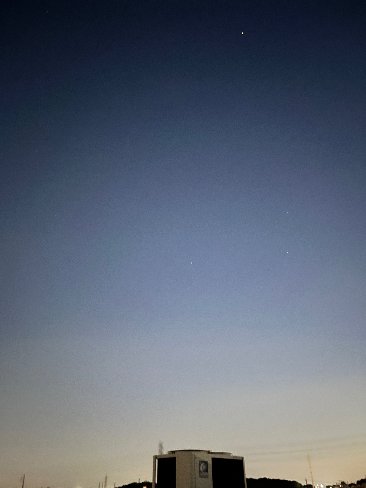
さそり座, へびつかい座
南の空にはさそり座が見えます。
1等星アンタレスと4個の2等星があります
。
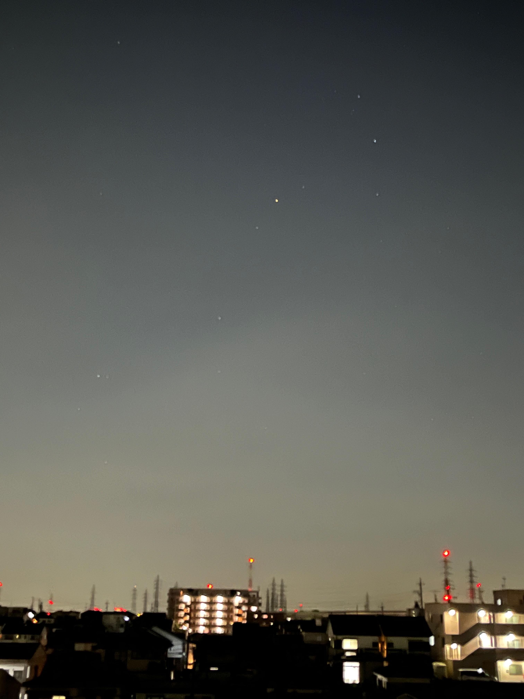
さそり座の上には大きな五角形のへびつかい座があります。
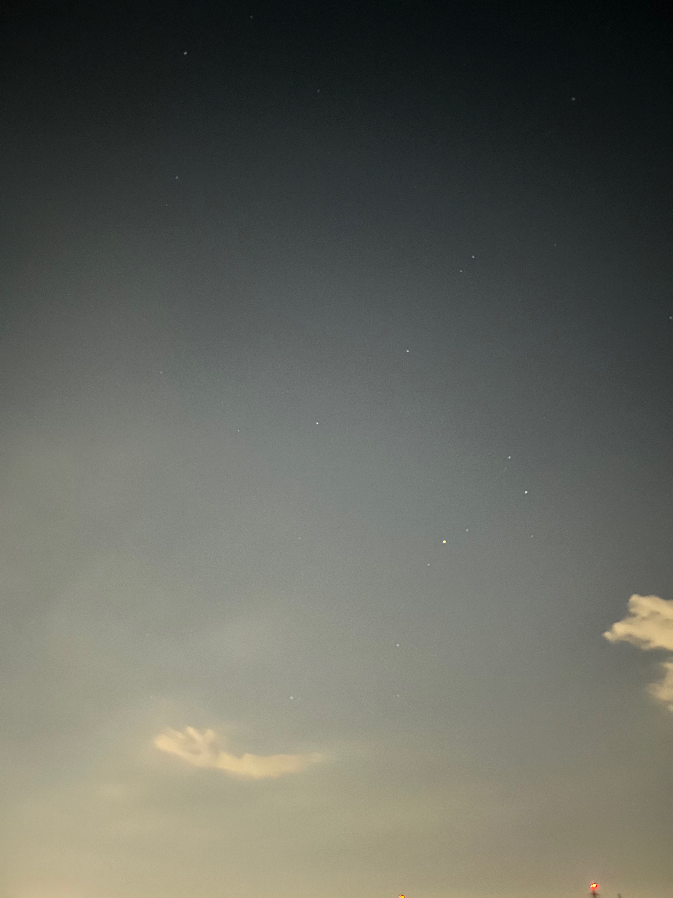
こと座, わし座, はくちょう座
夏の大三角(ベガ, デネブ, アルタイル)は東の空に見えます。
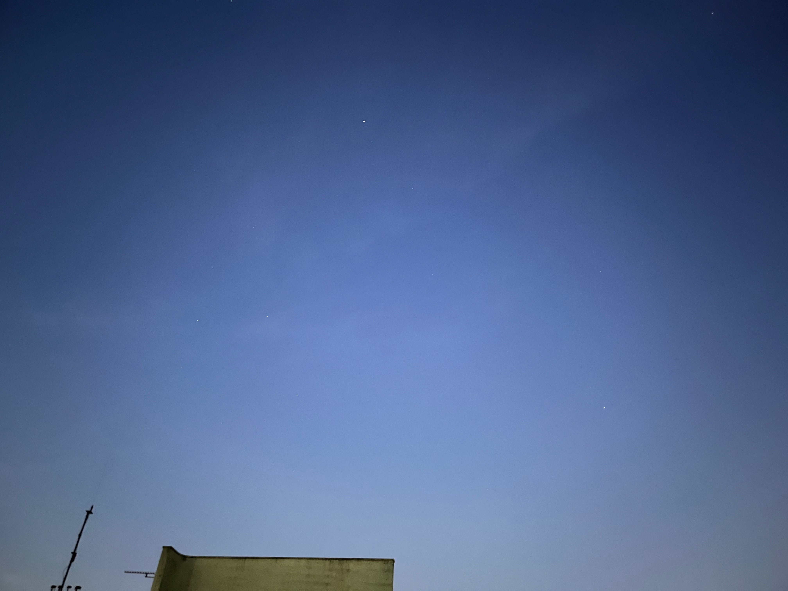
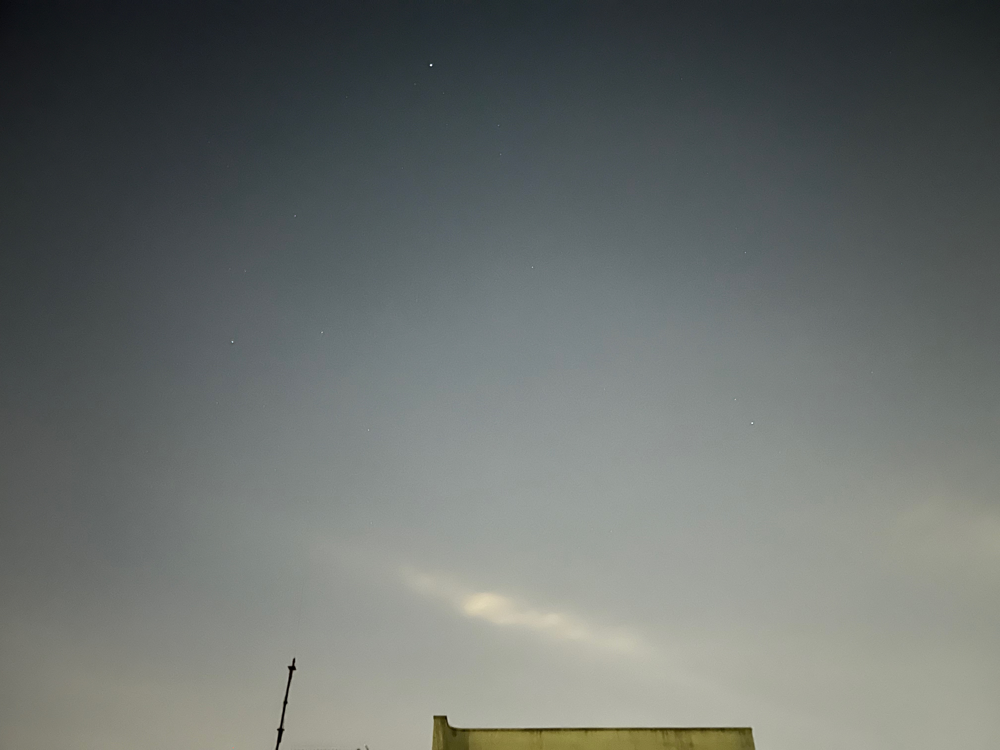
時刻 19:30 - 20:30
愛知県の知多半島で見た星空です
アルクトゥルスとスピカ
太陽が沈むと、アルクトゥルスが見えます。
アルクトゥルスはこの時期に見える恒星の中では一番明るいです。
アルクトゥルスが見つかったら、スピカが見えてきます。
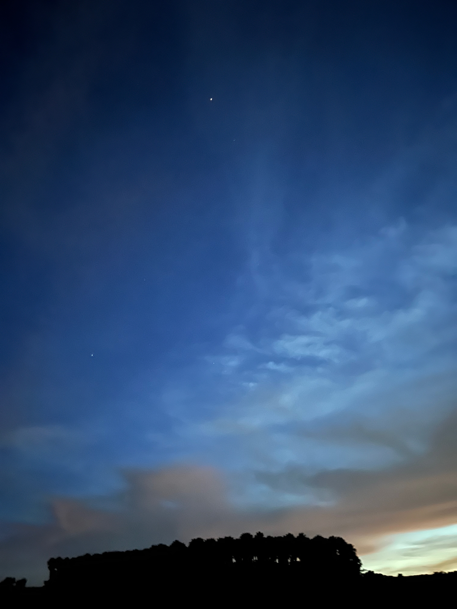
北斗七星
雲がかかっていました
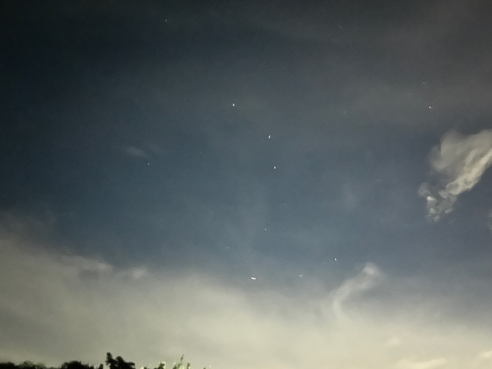
さそり座, てんびん座
南の空にはさそり座が見えます。
1等星アンタレスと4個の2等星があります。
豊明市内では見つけにくいてんびん座もよく見えます。
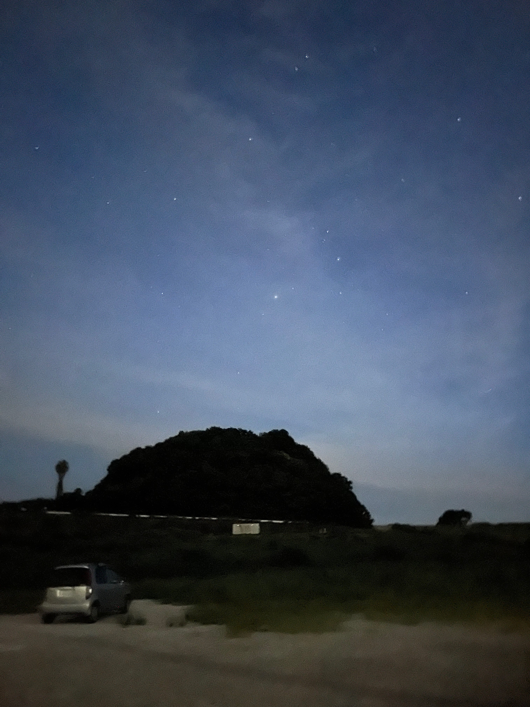
こと座, わし座, はくちょう座
夏の大三角は東の空に見えます
雲がかかっていました
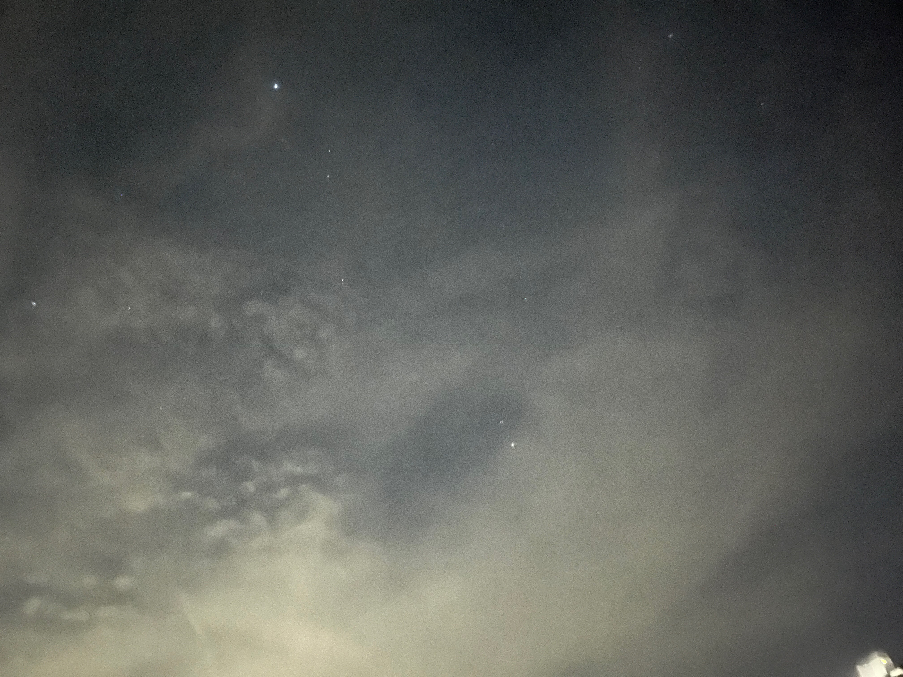
明け方には土星, 木星と秋の星座と冬の星座が見えます。
カシオペヤ座,アンドロメダ座,ペルセウス座とカペラ
北の空には秋の星座で有名なカシオペヤ座,アンドロメダ座,ペルセウス座が見えます。
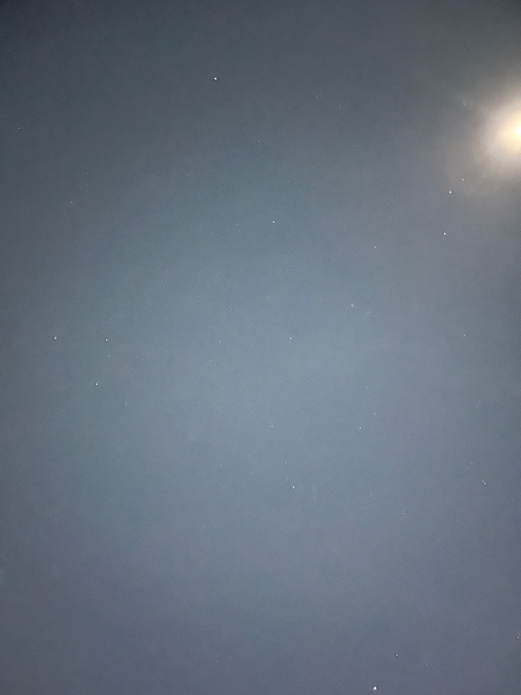
ペルセウス座に続いてカペラとぎょしゃ座の五角形も昇ってきます。
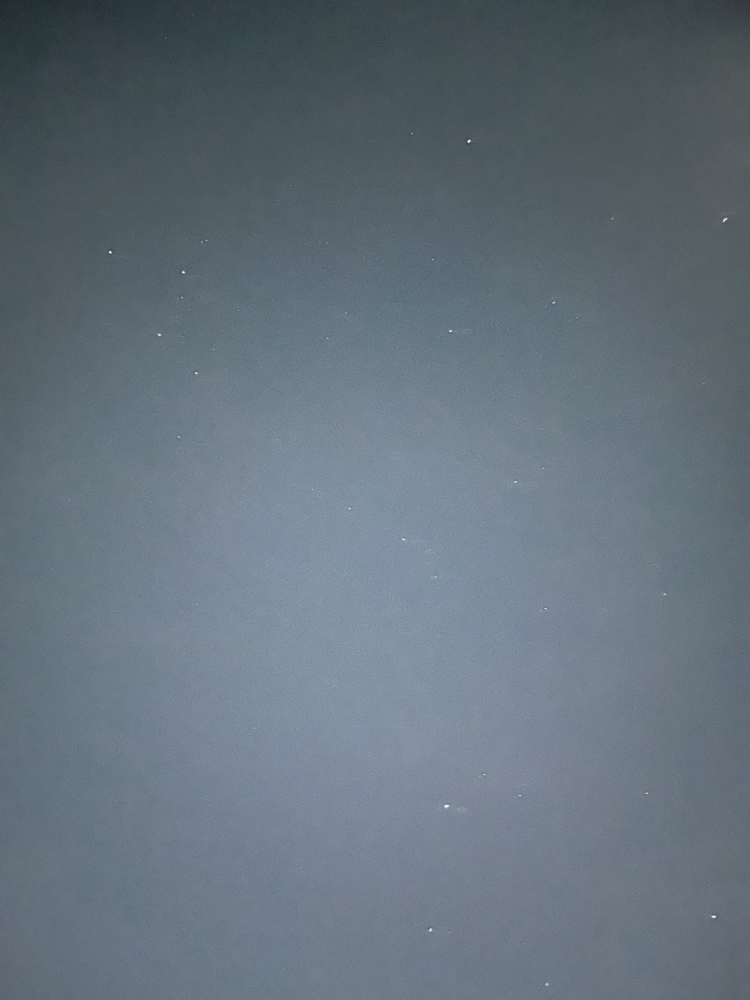
土星付近(ペガスス座,土星,フォーマルハウト)
明け方の南の空には土星と秋の一つ星:フォーマルハウトが見えます。
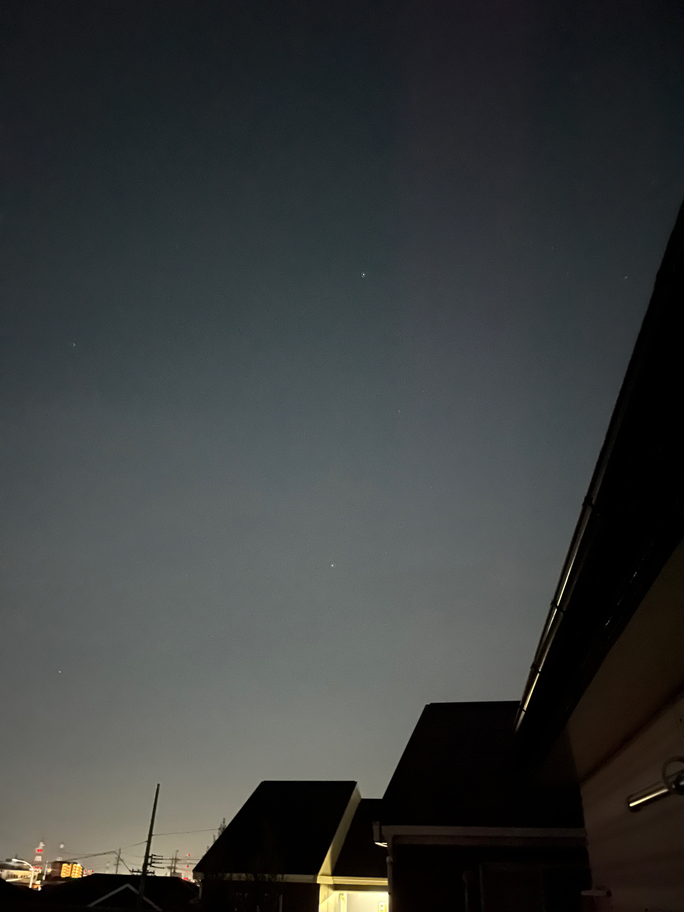
さらに見上げるとペガスス座が見えます。
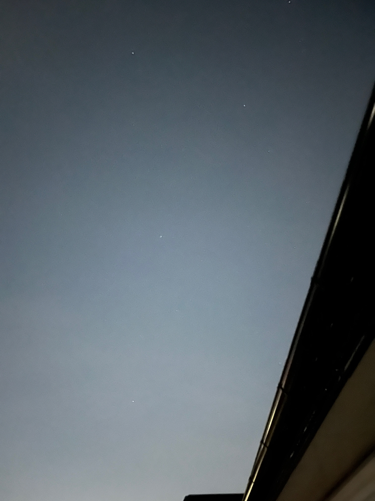
東の空にはおうし座付近に火星と木星が見えます。
よく見るとオリオン座のベテルギウスと三つ星も写っています。
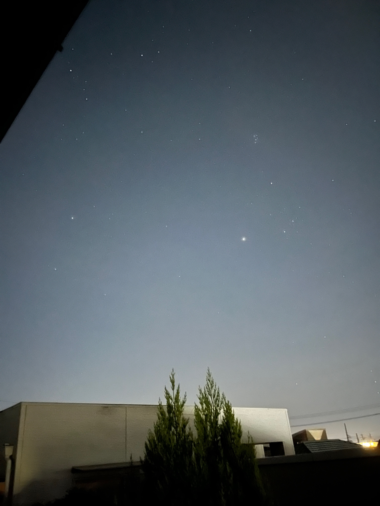